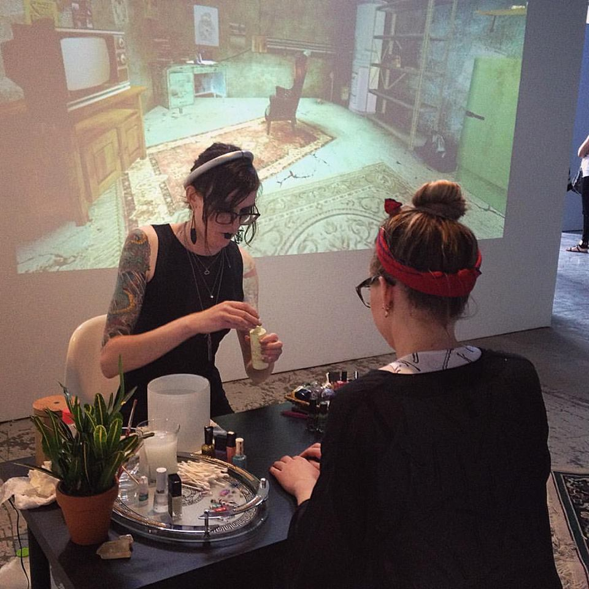
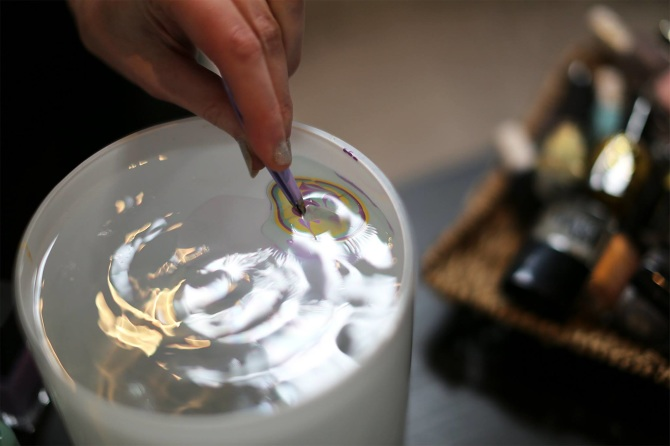
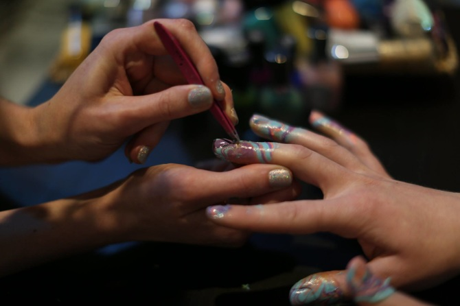
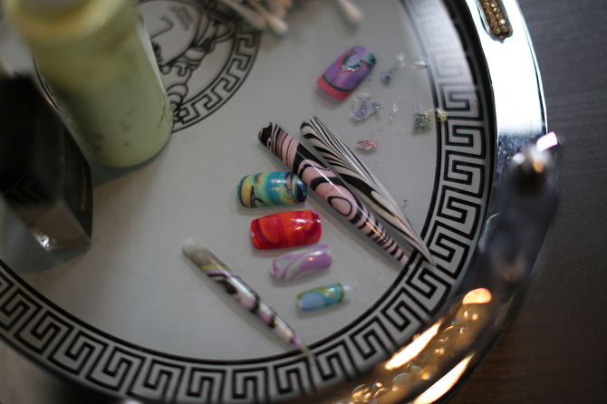
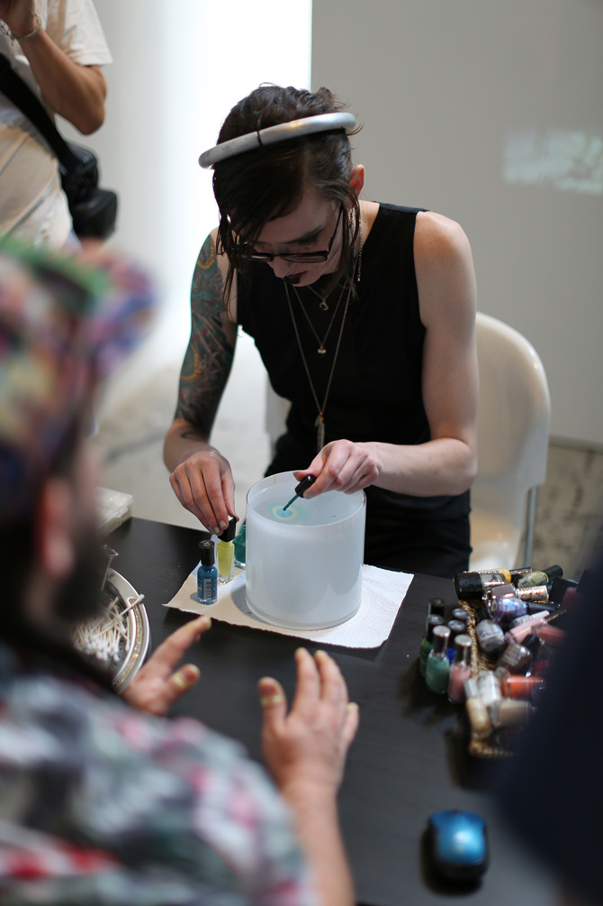
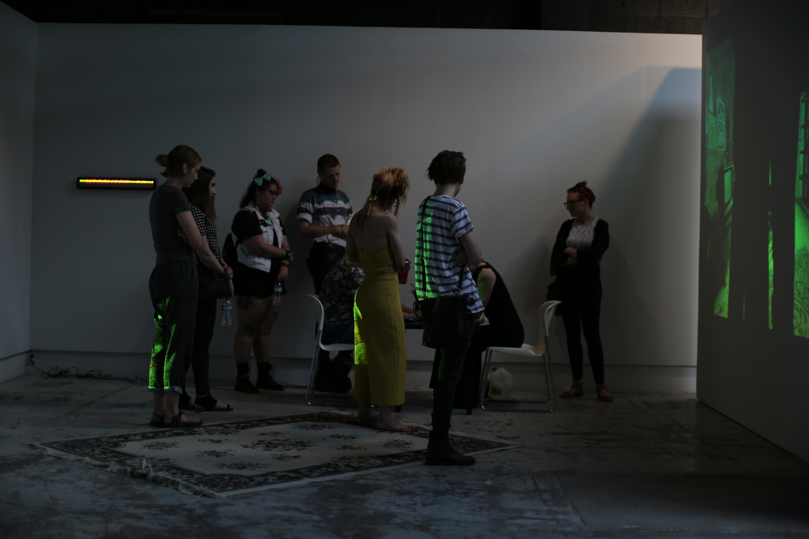

The Adyton Nail Salon
Half virtual installation, and half participatory performance, the Adyton Nail Salon is a space of divination, through beautification. Situated in a contemporary imagining of the subterranean inner sanctum of the temple of Delphi, willing participants have their fingernails water marbled and their fortunes told through a process akin to reading tea leaves or candle magic. Glamour allows a glimpse of a possible self—a new way of appearing that prefigures a new way of being. Manifesting this change requires adherence to the prophecy of the beauty regimen. Once the necessary changes have been made, insights can flow and the prophecy can actualize. The medium is in the massage parlor.






(Video walk-through of an explorable virtual environment created from a hacked level within Vampire: the Masquerade - Bloodlines. Special Thanks to Psycho-A, and Wesp5 whose work on the Bloodlines SDK made this mod possible.)